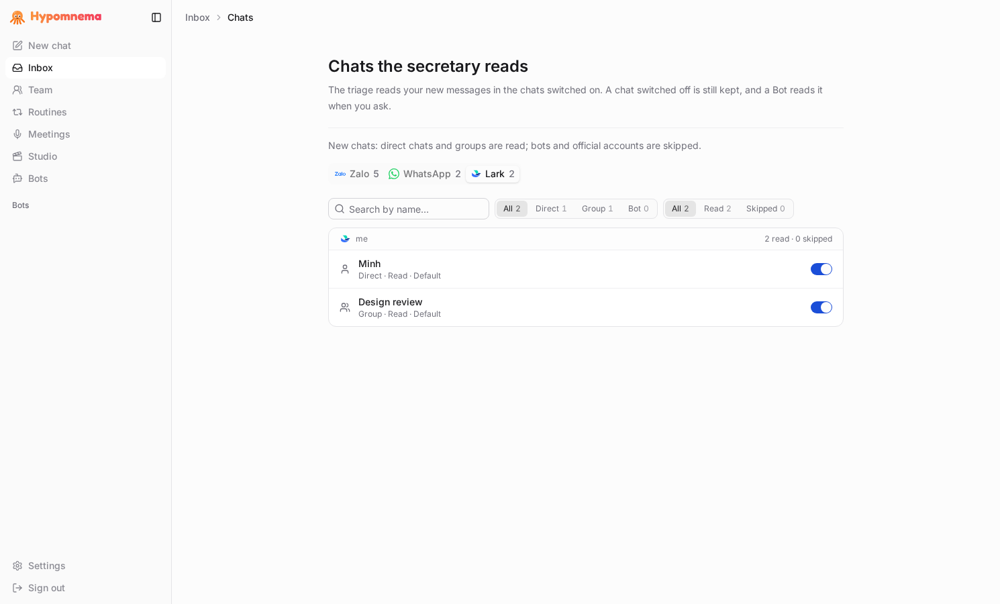
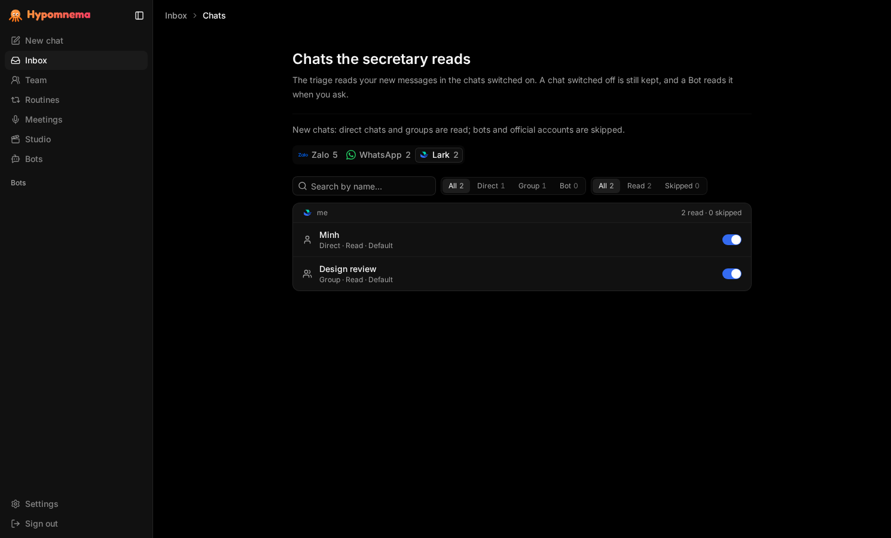
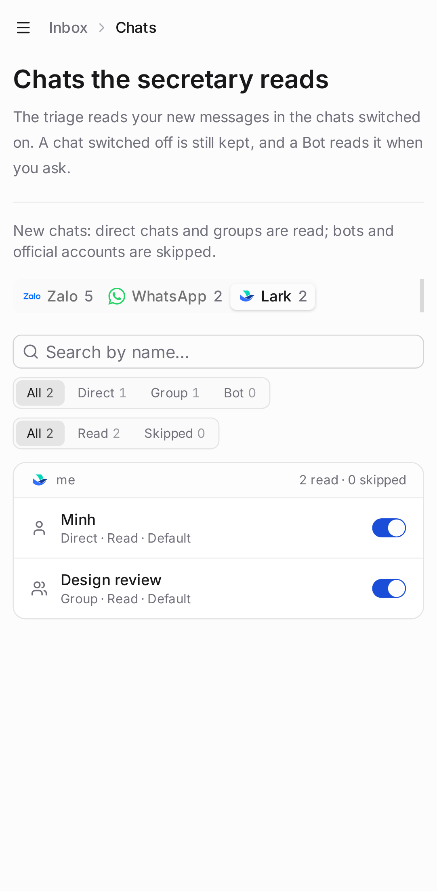
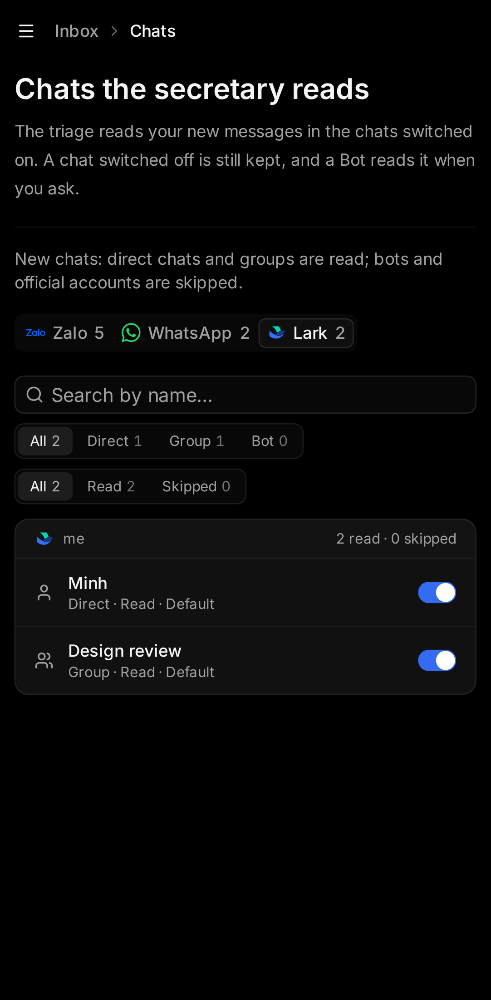
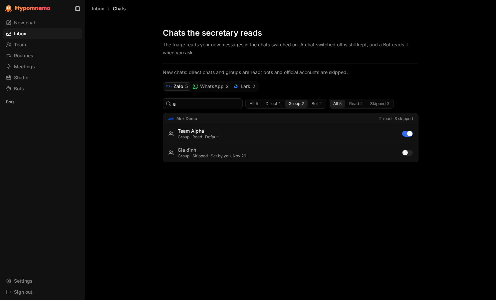
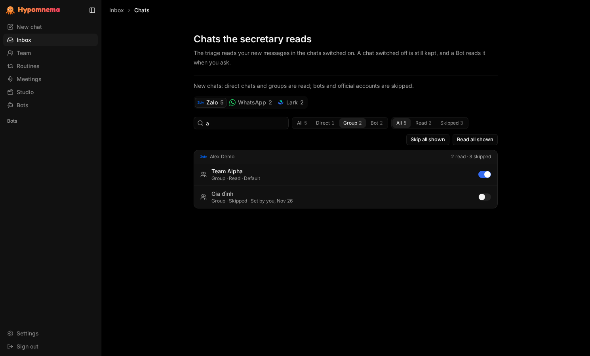
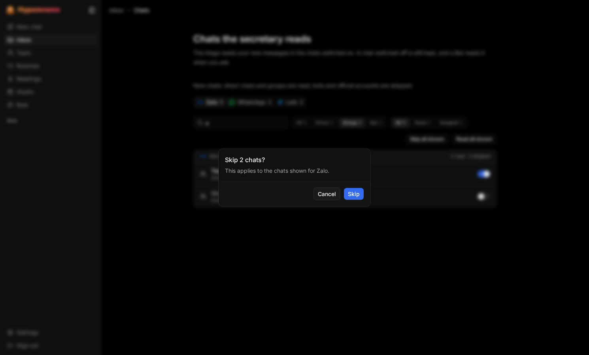
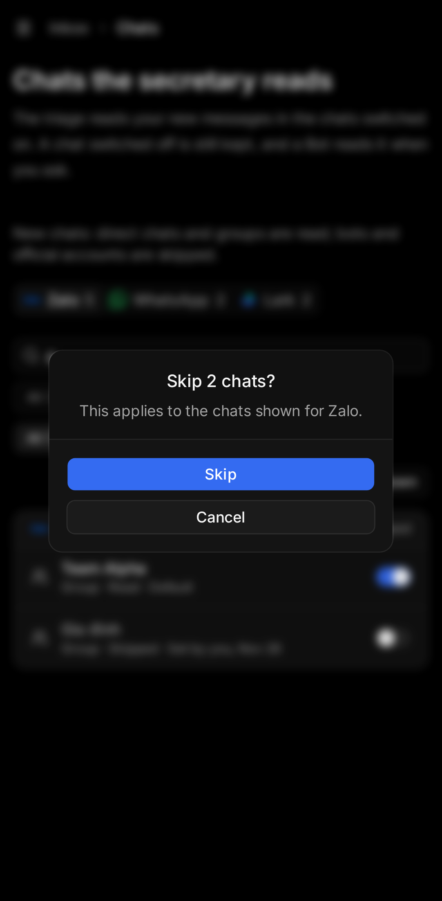

Inbox source tabs before and after
On desktop, the stray vertical scrollbar was at the far right of the row with Zalo, WhatsApp and Lark. The phone images show the Lark tab selected. All screenshots use made-up chats. Select an image for full size.
Desktop at 1490px, light



Desktop at 1490px, dark



Phone at 412px, light



Phone at 412px, dark



Bulk actions on the filtered list
The search and kind filter show two made-up group chats. The confirmation uses that count.
Desktop




Phone


Confirmation



